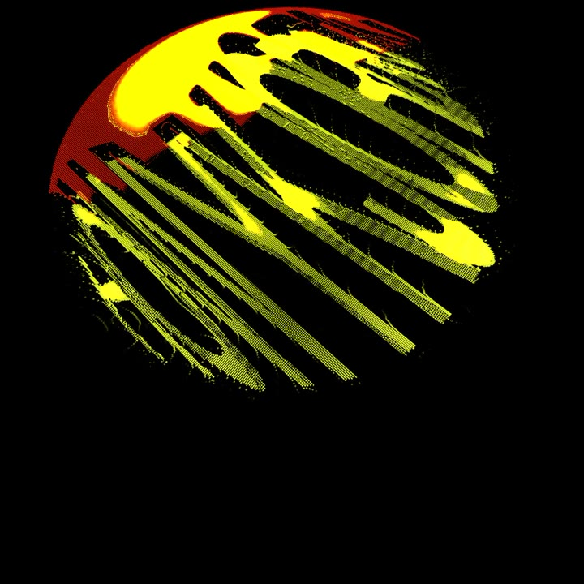

FIG. 01 / IDENTITY
Jordan
Stephens
Emerging Developer / Creative Technologist
About
An emerging developer with a passion for technology, creative problem-solving, and building systems that connect people and ideas.
Selected Work
01 / Creative Technology
TouchDesigner

Live visuals and experiments made in TouchDesigner.
OPEN PROJECT ↗ 02 / Image ArchivePhotography
Street and architecture photographs arranged as a working archive.
OPEN ARCHIVE ↗ 03 / Software DevelopmentProject Title
Project page reserved for a software development case study.
VIEW PAGE ↗